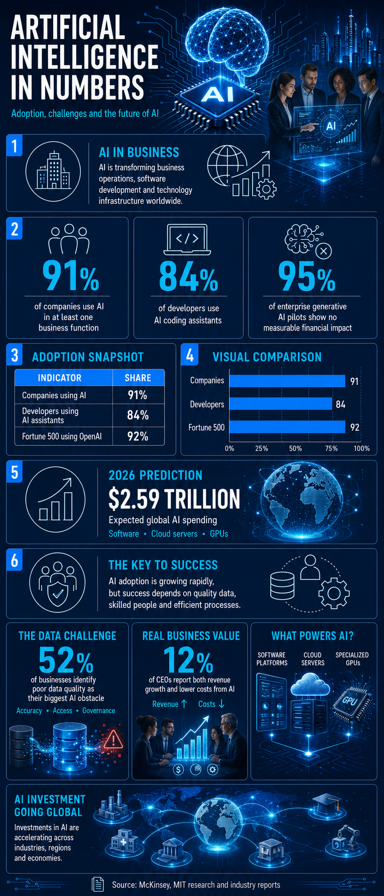
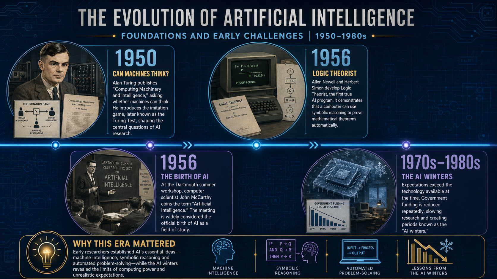
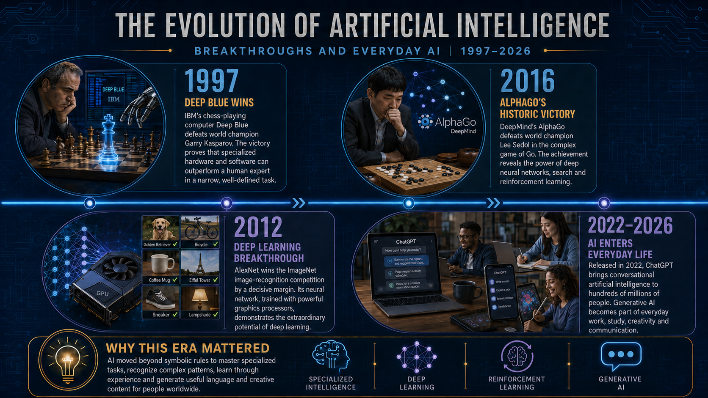
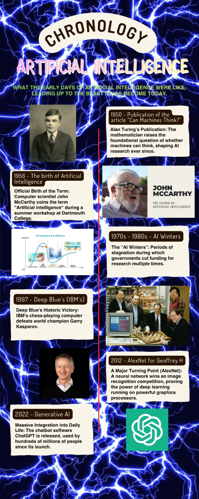
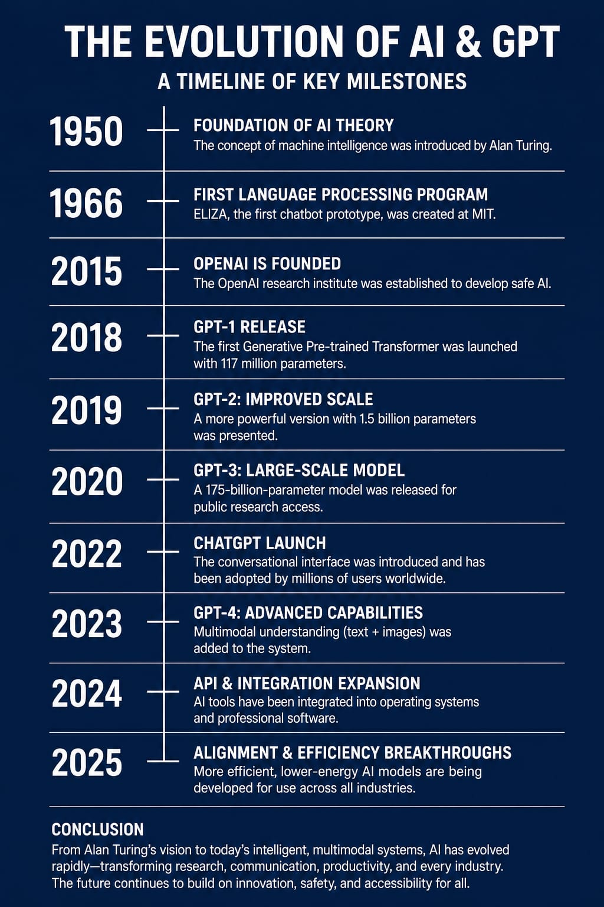

Visual Work
Gallery
Infographics created by our team to explain the evolution and impact of artificial intelligence.
Samuel Flores Cruz
Rodrigo Heredia Morante
Michel Daniel Oporto Valencia

How artificial intelligence has developed through software, data, algorithms, and modern computing power.

How artificial intelligence affects business, healthcare, education, infrastructure, and daily digital systems.
Infografía

Key statistics about artificial intelligence adoption, business challenges, and future investment.



